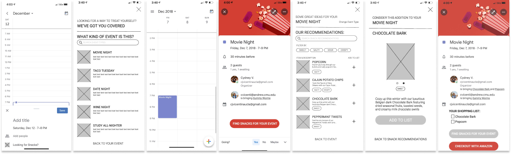

ideation and prototyping
Next, our team ideated around several ideas that incorporated the user insights
uncovered during interviews. We ultimately landed on a browsing opportunity centered around event-planning:
a Whole Foods extension for Google Calendar that provided snack recommendations for various events.
Users would have the opportunity to browse, purchase snacks, or add snacks to event description directly in their calendar.

By connecting snack-browsing directly to an event, the extension would reduce guilt by assigning a
clear purpose to each snack purchase. Furthermore, the extension would support customers’ list-creation habits for
grocery shopping while offering online delivery options that reduce the need to shop in-store.
final mobile and desktop designs
Think-aloud interviews and peer critiques were conducted to refine our designs.
Our final responsive designs are shown below.